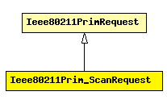

File: NetworkInterfaces/Ieee80211/Mgmt/Ieee80211Primitives.msg
C++ definition: click here
Losely based on MLME-SCAN.request.
The following diagram shows part of the inheritance hierarchy. Unresolved types are missing from the diagram. Click here to see the full picture.
| Ieee80211PrimRequest | Base class for request primitives |
| Name | Type | Description |
|---|---|---|
| BSSType | int | determines type of BSS's to include in the scan |
| BSSID | MACAddress | specific BSSID to scan for (default: any) |
| SSID | string | SSID to scan for SSID (default: any) |
| activeScan | bool | whether to perform active or passive scanning |
| probeDelay | double | delay (in ìs) to be used prior to transmitting a Probe frame during active scanning |
| channelList | int[] | list of channels to scan (default: all channels) |
| minChannelTime | double | minimum time to spend on each channel when scanning |
| maxChannelTime | double | maximum time to spend on each channel when scanning |
class Ieee80211Prim_ScanRequest extends Ieee80211PrimRequest { fields: int BSSType enum(Ieee80211BSSType); // determines type of BSS's to include in the scan MACAddress BSSID; // specific BSSID to scan for (default: any) string SSID; // SSID to scan for SSID (default: any) bool activeScan; // whether to perform active or passive scanning double probeDelay; // delay (in ìs) to be used prior to transmitting a Probe frame during active scanning int channelList[]; // list of channels to scan (default: all channels) double minChannelTime; // minimum time to spend on each channel when scanning double maxChannelTime; // maximum time to spend on each channel when scanning };